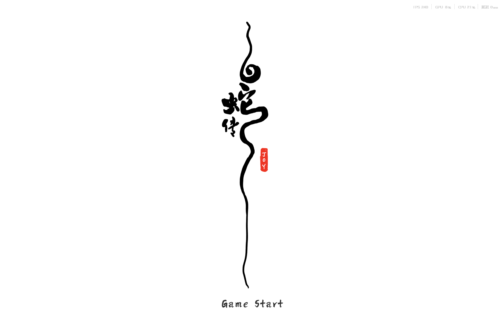

Challenge
Young audiences rarely encounter traditional opera in their daily media environment. 年轻观众很少在日常媒介环境中接触传统戏曲。
Using interactive storytelling to reconnect traditional culture with a new generation. 用互动叙事让传统文化重新连接年轻一代。
A Cantonese Opera Rhythm Game 一款粤剧题材叙事节奏游戏
White Snake is a narrative rhythm game inspired by Cantonese Opera. Through rhythm gameplay and interactive storytelling, the project explores how traditional performing arts can connect with younger audiences in the digital age. 《白蛇》是一款受粤剧启发的叙事节奏游戏。项目通过节奏玩法与互动叙事，探索传统表演艺术如何在数字时代与年轻观众建立连接。
01
White Snake is a narrative rhythm game based on the Chinese folk legend of White Snake and inspired by Cantonese Opera. The game follows Bai Suzhen and Xu Xian from their first encounter at West Lake to the conflict at Jinshan Temple. 《白蛇》是一款基于中国民间传说《白蛇传》、并受粤剧启发的叙事节奏游戏。游戏从白素贞与许仙在西湖初遇展开，推进到金山寺的情感冲突。
The project combines rhythm gameplay, ink-wash visual design, and interactive storytelling to introduce traditional performing arts through a contemporary game format. 项目结合节奏玩法、水墨视觉设计与互动叙事，以当代游戏形式介绍传统表演艺术。

02
How can traditional culture remain meaningful in a digital generation? 传统文化如何在数字一代中继续产生意义？
Challenge
Young audiences rarely encounter traditional opera in their daily media environment. 年轻观众很少在日常媒介环境中接触传统戏曲。
Question
Could gameplay become a new entry point for cultural storytelling? 玩法能否成为文化叙事的新入口？
Approach
Combine rhythm mechanics, narrative progression, and Cantonese Opera aesthetics into one interactive experience. 将节奏机制、叙事推进与粤剧审美整合为一个互动体验。
Act I
Connection Through Rhythm 通过节奏建立连接
03
Designing Emotion Through Rhythm 通过节奏设计情感
Design Goal
Express the emotional development between Bai Suzhen and Xu Xian.表现白素贞与许仙之间逐渐形成的情感。
Core Mechanic
Notes emerge from both characters and converge toward the center of the bridge.音符从两个角色方向出现，并向桥中央的判定区域汇聚。
Player Experience
Players participate in the gradual formation of connection through rhythm.玩家通过节奏参与两人关系逐渐建立的过程。
Outcome
The rhythm system becomes a narrative device rather than a separate gameplay layer.节奏系统成为叙事装置，而不是独立于故事之外的玩法层。

Act II
Conflict Through Rhythm 通过节奏表现冲突
04
Design Goal
Transform the story's emotional conflict into an active gameplay challenge.将故事中的情感冲突转化为主动参与的玩法挑战。
Core Mechanic
The rhythm system is combined with a boss battle. Perfect and Good hits damage Fahai's shield and health, while Miss breaks the player's rhythm.节奏系统与 boss 战结合。Perfect 和 Good 会削减法海的护盾与生命值，Miss 则打断玩家节奏。
Player Experience
Players are no longer only following the story; they actively participate in the confrontation.玩家不再只是跟随故事，而是主动参与冲突。
Outcome
The conflict between love, fate, and authority becomes playable through rhythm-based combat.爱、命运与权威之间的冲突，通过节奏战斗变得可玩。

05
Translating Cantonese Opera into a playable visual language. 将粤剧转译为可玩的视觉语言。
Why Ink Wash?
The ink-wash style creates a restrained visual atmosphere that echoes the mist, water, and emotional ambiguity of the White Snake legend.水墨风格形成克制的视觉氛围，回应《白蛇传》中雾、水与情感暧昧性。
Why Cantonese Opera?
The project references Cantonese Opera costumes, stage aesthetics, and musical expression to preserve the cultural identity of the source material.项目参考粤剧服装、舞台审美与音乐表达，以保留素材本身的文化身份。
06
Technical systems were designed to support rhythm, narrative, and visual clarity. 技术系统服务于节奏、叙事与视觉清晰度。
Position-based judgement became inaccurate when notes had to follow animated characters.当音符需要跟随动画角色时，基于位置的判定变得不准确。
SolutionI redesigned the judgement logic around a timeline-based system that compares player input with each note's expected arrival time.我将判定逻辑改为基于时间轴，比较玩家输入与每个音符预期到达时间。
ImpactThis improved rhythm accuracy and kept music, animation, and narrative timing synchronized.这提高了节奏准确性，并让音乐、动画与叙事时机保持同步。
Manually adjusting note timing inside the engine was slow and error-prone.在引擎中手动调整音符时间很慢且容易出错。
SolutionI stored note timing, ownership, and level data in CSV files, then built a LevelData Loader to convert the data into playable note sequences.我将音符时间、归属与关卡数据存入 CSV 文件，并构建 LevelData Loader 转换为可玩的音符序列。
ImpactThis made iteration faster and reduced repetitive manual adjustment.这加快了迭代速度，并减少重复的手动调整。
The second act needed stronger conflict than a traditional rhythm stage.第二幕需要比传统节奏关卡更强的冲突感。
SolutionI gave Fahai a shield and health system connected to rhythm judgement results.我为法海设计了与节奏判定结果相连的护盾与生命值系统。
ImpactThe story climax became an interactive confrontation rather than a passive cutscene.故事高潮变成互动对抗，而不是被动观看的过场。
Notes were sometimes hidden behind background effects, subtitles, characters, or UI elements.音符有时会被背景特效、字幕、角色或 UI 元素遮挡。
SolutionI created a dedicated camera to render the note layer above other visual elements.我创建了专门的相机，将音符层渲染在其他视觉元素之上。
ImpactThe rhythm interface remained clear during visually complex scenes.即使在视觉复杂的场景中，节奏界面也保持清晰。
07
Problem: Player inputs were counted as Miss even when no visible note was present.即使没有可见音符，玩家输入也会被判定为 Miss。
Solution: Add an activation window so keys are only detected when a note enters the judgement zone.加入激活窗口，只在音符进入判定区时检测按键。
Problem: Notes were visually blocked by background effects and UI layers.音符被背景特效与 UI 图层遮挡。
Solution: Use a dedicated note-rendering camera.使用专门的音符渲染相机。
Problem: Character movement made position-based judgement unreliable.角色移动让基于位置的判定不稳定。
Solution: Move to a timeline-based judgement system.转向基于时间轴的判定系统。
08
What worked?
The strongest part of this project was the connection between gameplay and narrative. The two-direction note movement in West Lake Encounter and the boss battle in Flooding Jinshan Temple allowed the mechanics to express story emotions directly.项目中最有效的部分，是玩法与叙事之间的连接。西湖初遇中双向汇聚的音符，以及水漫金山中的 boss 战，都让机制直接表达了故事情绪。
What surprised me?
I initially thought the main challenge would be adapting Cantonese Opera into a game. During development, I realized the deeper challenge was preserving the emotional meaning of the source material while still making the game readable and engaging for new players.我最初以为主要挑战是把粤剧改编成游戏。开发过程中我意识到，更深层的挑战是保留素材的情感意义，同时让新玩家依然能读懂并投入。
What would I improve next?
If I continue developing this project, I would refine the rhythm feedback, add more playable chapters, and create stronger transitions between music, animation, and player input.如果继续开发，我会优化节奏反馈，加入更多可玩章节，并加强音乐、动画与玩家输入之间的转场。
09
Expand the story with additional chapters such as Stealing the Immortal Herb, Broken Bridge Reunion, and Leifeng Pagoda.扩展盗仙草、断桥重逢、雷峰塔等后续章节。
Add more Cantonese Opera music segments.加入更多粤剧音乐段落。
Develop a cultural archive system with costumes, character notes, and opera knowledge.开发包含服装、角色笔记与戏曲知识的文化档案系统。
Optimize the game for PC and mobile platforms.针对 PC 与移动平台进行优化。
Traditional stories do not disappear. They simply wait for new ways to be told. 传统故事不会消失。它们只是等待新的讲述方式。